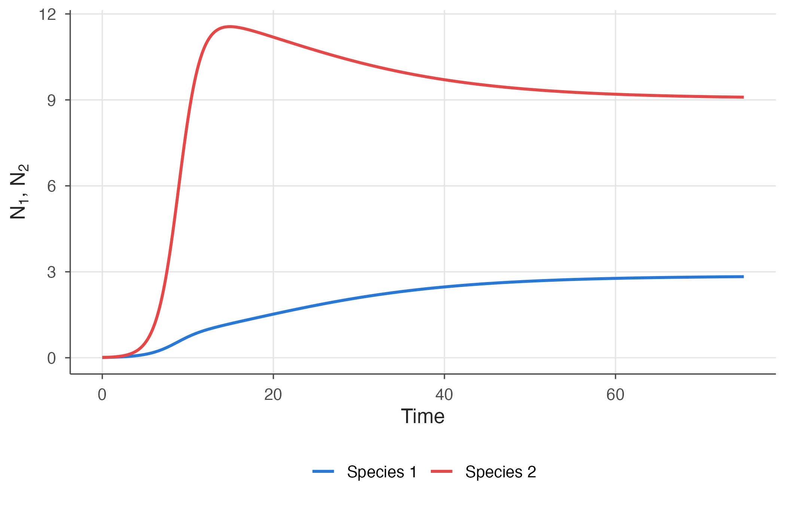
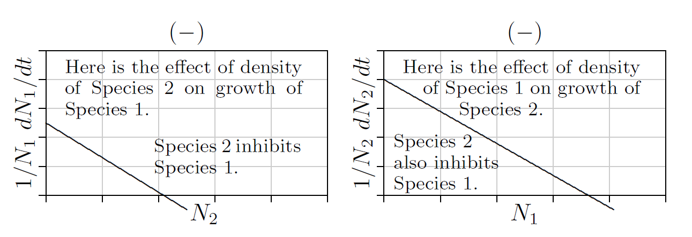
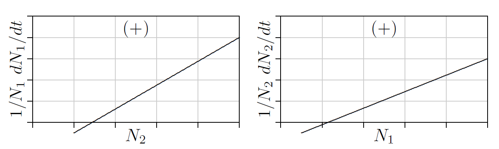
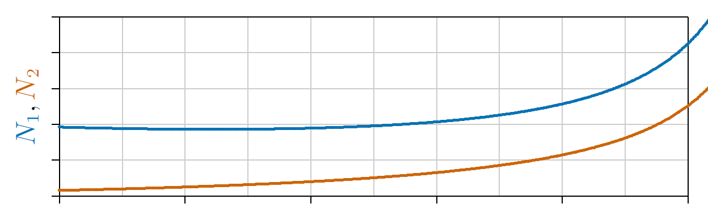
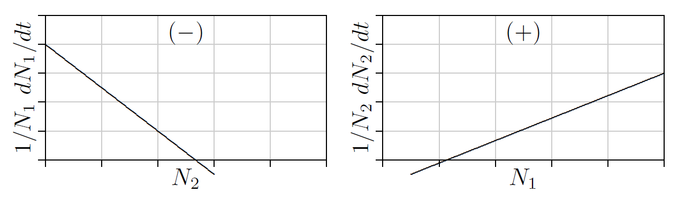
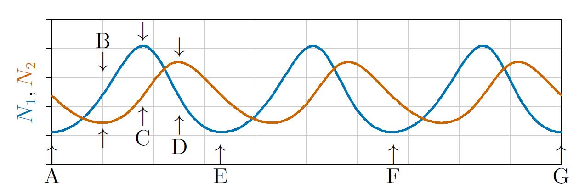
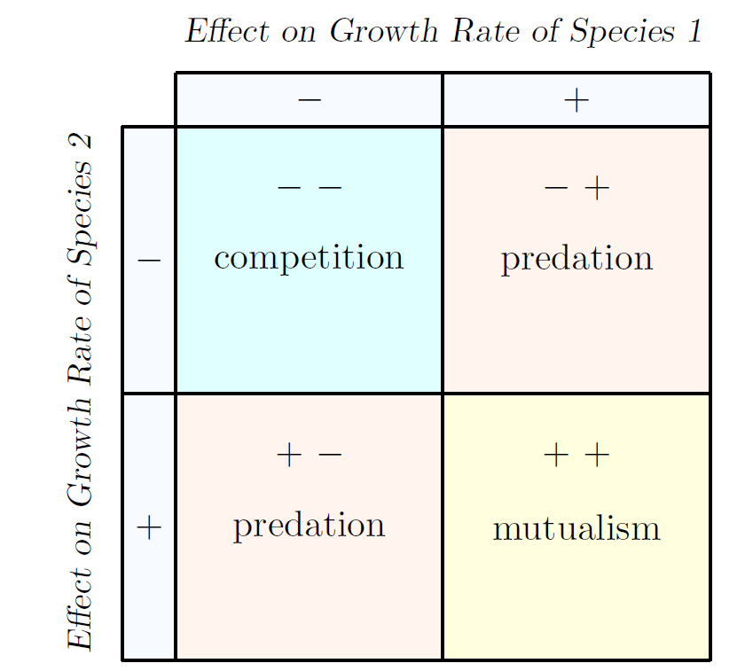

8 Theory of interactions
8.1 Dynamics of two interacting species
In the first part of this book you’ve seen the two main categories of single-species dynamics—logistic and orthologistic, with exponential growth being an infinitely fine dividing line between the two. And you’ve seen how population dynamics can be simple or chaotically complex.
Moving forward you will see three kinds of two-species dynamics—mutualism, competition, and predation—and exactly forty kinds of three-species dynamics, deriving from the parameters of the population equations and their various combinations.
To review, the population dynamics of a single species are summarized in the following equation.
\[ \frac{1}{N}\frac{dN}{dt}=r+sN \]
Here parameter \(r\) is the “intrinsic growth rate” of the species—the net rate at which new individuals are introduced to the population when the population is vanishingly sparse, and \(s\) is a “density dependence” parameter that reflects how the size of the population affects the overall rate. Parameter \(s\) is key. If \(s\) is negative, the population grows “logistically,” increasing to a “carrying capacity” of \(-r/s\), or decreasing to that carrying capacity if the population starts above it. If \(s\) is positive, then the population grows “orthologistically,” increasing ever faster until it encounters some unspecified limit not addressed in the equation. Exponential growth is the dividing line between these two outcomes, but this would only occur if \(s\) remained precisely equal to zero.
How would this single-species equation be extended to two species? First, instead of a number \(N\) for the population size of one species, we need an \(N\) for each species. Call these \(N_1\) for species 1 and \(N_2\) for species 2. Then, if the two species do not interact at all, the equations could be
\[ \begin{aligned} \frac{1}{N_1}\frac{dN_1}{dt}&=r_1+s_{1,1}N_1 \\ \frac{1}{N_2}\frac{dN_2}{dt}&=r_2+s_{2,2}N_2 \end{aligned} \]
Here \(r_1\) and \(r_2\) are the intrinsic growth rates for \(N_1\) and \(N_2\), respectively, and \(s_{1,1}\) and \(s_{2,2}\) are the density dependence parameters for the two species. (The paired subscripts in the two-species equations help us address all interactions.)
\(s_{i,j}\) is the parameter describing how the density of species \(j\) affects the growth of species \(i\).
- The first subscript, \(i\), identifies the species affected.
- The second subscript, \(j\), identifies the species causing the density effect.
| Parameter | Meaning |
|---|---|
| \(s_{1,1}\) | How the density of species 1 affects its own growth |
| \(s_{1,2}\) | How the density of species 2 affects the growth of species 1 |
| \(s_{2,1}\) | How the density of species 1 affects the growth of species 2 |
| \(s_{2,2}\) | How the density of species 2 affects its own growth |
There are thus four possible \(s_{i,j}\) parameters, summarized in Box 8.1. With these parameters in mind, here are the two-species equations. The new interaction terms are in blue on the right.
\[ \begin{aligned} \frac{1}{N_1}\frac{dN_1}{dt}&=r_1+s_{1,1}N_1+\color{blue}{s_{1,2}N_2} \\ \frac{1}{N_2}\frac{dN_2}{dt}&=r_2+s_{2,2}N_2+\color{blue}{s_{2,1}N_1} \end{aligned} \tag{8.1}\]
In the single-species equations, the sign of the \(s\) term separates the two main kinds of population dynamics—positive for orthologistic, negative for logistic. Similarly, in the two-species equations, the signs of the interaction parameters \(s_{1,2}\) and \(s_{2,1}\) determine the population dynamics.
Two parameters allow three main possibilities—(1) both parameters can be negative, (2) both can be positive, or (3) one can be positive and the other negative. These are the main possibilities that natural selection has to work with.
Competition. First consider the case where \(s_{1,2}\) and \(s_{2,1}\) are both negative, as in Figure 8.1.

For a single species, parameter \(s\) being negative causes the population to approach a carrying capacity. The same could be expected when parameters \(s_{1,2}\) and \(s_{2,1}\) are both negative—one or both species approach a carrying capacity at which the population remains constant, or as constant as external environmental conditions allow.
One example is shown in Figure 8.2, where the population of each species is plotted on the vertical axis and time on the horizontal axis. This figure was produced by Program 8.1, shown later in this chapter.
Here, species 2, in red, grows faster, gains the advantage early, and rises to a high level. Species 1, in blue, grows more slowly but eventually rises and, because of the mutual inhibition between species in competition, drives back the population of species 2. The two species eventually approach a joint carrying capacity.
In other cases of competition, a “superior competitor” can drive the other competitor to extinction—an outcome called “competitive exclusion.” Or, either species can drive the other to extinction, depending on which gains the advantage first. These and other cases are covered in later chapters.
In any case, when both interaction terms \(s_{1,2}\) and \(s_{2,1}\) are negative, in minus–minus interactions, each species inhibits the other’s growth, which ecologists call the interaction “competition.”
Mutualism. The opposite of competition is mutualism, where each species enhances rather than inhibits the growth of the other. Both \(s_{1,2}\) and \(s_{2,1}\) are positive.

Depicted in Figure 8.3 is a form of “obligate mutualism,” where both species decline to extinction if either is not present. This is analogous to a joint Allee point, where the growth curves cross the horizontal axis and become negative below certain critical population levels. If this is not the case and the growth curves cross the vertical axis, each species can survive alone; this is called “facultative mutualism,” and we’ll learn more about it in Chapter 17.
For now, the important point is how mutualistic populations grow or decline over time. A single species whose density somehow enhances its own rate of growth becomes orthologistic, increasing ever more rapidly toward a singularity, before which it will grow so numerous that it will be checked by some other inevitable limit, such as space, predation, or disease.
It turns out that the dynamics of the two species enhancing each other’s growth are similar to those of a single species enhancing its own growth. Both move to a singularity at ever increasing rates as illustrated earlier in Figure 4.2 and below in Figure 8.4. Of course, such growth cannot continue forever. It will eventually be checked by some force beyond the scope of the equations, just as human population growth was abruptly checked in the mid-twentieth century—so clearly visible earlier in Figure 6.3.

Predation. The remaining possibility for these two-species equations is when one interaction parameter \(s_{i,j}\) is positive and the other is negative. In other words, when the first species enhances the growth of the second while the second species inhibits the growth of the first. Or vice versa. This is “predation,” also manifested as parasitism, disease, and other forms.
Think about a predator and its prey. The more prey, the easier it is for predators to catch them, hence the easier it is for predators to feed their young and the greater the predator’s population growth. This is the right part of Figure 8.5. The more predators there are, however, the more prey are captured; hence the lower the growth rate of the prey, as shown on the left. \(N_1\) here, then, represents the prey, and \(N_2\) represents the predator.

Prey can survive on their own, without predators, as reflected on the left in positive growth for \(N_1\) when \(N_2\) is 0. Predators, however, cannot survive without prey, as reflected on the right in the negative growth for \(N_2\) when \(N_1\) is 0. This is like an Allee point for predators, which will start to die out if the prey population falls below this point.
The question here is this: what will be the population dynamics of predator and prey through time? Will the populations grow logistically and level off at a steady state, as suggested by the negative parameter \(s_{1,2}\), or increase orthologistically, as suggested by the positive parameter \(s_{2,1}\)?
Actually, they do both. Sometimes they increase faster than exponentially, when predator populations are low and growing prey populations provide ever increasing per capita growth rates for the predator, according to the right part of Figure 8.5. In due time, however, predators become abundant and depress prey populations, in turn reducing growth of the predator populations. As shown in Figure 8.6, the populations oscillate in ongoing tensions between predator (red line) and prey (blue line).

Examine this figure in detail. At the start, labeled A, the prey population is low and predators are declining for lack of food. A steady decline in the number of predators creates better and better conditions for prey, whose populations then increase orthologistically at ever accelerating per capita rates as predators die out and conditions for prey improve accordingly.
But then the situation turns. Prey grow abundant, with the population rising above the Allee point of the predator, at B. The number of predators thus start to increase. While predator populations are low and the number of prey is increasing, conditions continually improve for predators, and their population grows approximately orthologistically for a time.
Then predators become abundant and drive the growth rate of the prey negative. The situation turns again, at C. Prey starts to decline and predator growth becomes approximately logistic, levelling off and starting to decline at D. By E it has come full circle and the process repeats, ad infinitum.
While Figure 8.6 illustrates the classical form for predator–prey interactions, other forms are possible. When conditions are right, the oscillations can dampen out and both predator and prey populations can reach steady states. Or the oscillations can become so wild that predators kill all the prey and then vanish themselves. This assumes some effectively-zero value for \(N_1\) and \(N_2\) below which they “snap” to zero. Or prey populations can become so low that predators all die out, leaving the prey in peace. Or both can go extinct. Or in the case of human predators, the prey can be domesticated and transformed into mutualists. More on all such dynamics in later chapters.
8.2 Code for two species
Below is computer code for two-species dynamics—a logical expansion of the code for one-species dynamics you saw in Chapter 4.
The code in Program 8.1 produced the graph in Figure 8.2 and, with other values for \(N_i\), \(r_i\), \(s_{i,j}\), also produced the graphs in Figure 8.4 and Figure 8.6.
N1 = .01; N2 = .01
r1 = 0.5; r2 = 0.8
s11 = -0.08; s12 = -0.03; s21 = -0.09; s22 = -0.06
t = 0; tmax = 75; dt = .0001; step = 0
finalpop <- data.frame(t = t, N1 = N1, N2 = N2) # holds the results
while (t < tmax) {
dN1 = (r1 + s11*N1 + s12*N2) * N1 * dt
dN2 = (r2 + s21*N1 + s22*N2) * N2 * dt
N1 = N1 + dN1; if (N1 < 0) N1 = 0
N2 = N2 + dN2; if (N2 < 0) N2 = 0
t = t + dt; step = step + 1
if (step == 1000) { # TRUE every 1000th iteration
finalpop <- rbind(finalpop, data.frame(t = t, N1 = N1, N2 = N2))
step = 0
}
}
library(ggplot2)
ggplot(finalpop, aes(x = t)) +
geom_line(aes(y = N1), colour = "blue") +
geom_line(aes(y = N2), colour = "red") +
labs(x = "Time", y = expression(N[1] * ", " * N[2]))This code uses a time step dt of 1/10,000 but displays only every 1000th time step, using the variable named step. This is a reliable way to display output periodically, because step takes on only integer values 0, 1, 2 … Watching variable t for the same purpose may not be reliable; t has rounding errors in its fractional portion, which typically is represented only approximately by the computer.
By the way, here is a crucial requirement for coding multispecies dynamics: you must update all of the \(N_i\) together. You might be tempted to shorten the code by writing the following, getting rid of the dN1 and dN2 variables.
N1 = N1 + (r1 + s11*N1 + s12*N2) * N1 * dt; if (N1 < 0) N1 = 0
N2 = N2 + (r2 + s21*N1 + s22*N2) * N2 * dt; if (N2 < 0) N2 = 0This shortened code, however, contains a serious bug that could be difficult to detect. (A “bug” is the computerese term for any mistake in computer code, typically one that goes undetected.) The calculation of N2 on the second line uses the new value of N1, not the present value. This will generate subtly incorrect results that could be costly—if, for example, you were using the code to project the course of an epidemic.
Careful code reviews with experienced colleagues are one way to help avoid such bugs. If the problem is important enough, having the code written independently by two or more people not communicating with each other, except by accepting the same specifications and comparing the final results, is a way to approach correctness. This is like independent replication of scientific experiments. Other methods of ensuring that code is correct are addressed later.
8.3 Summary of interactions
In summary, based on the effects of each population on the other, two species can interact mainly in three different ways, as shown in Figure 8.7. Competition is a ‘− −’ combination, mutualism is ‘+ +’, and predation is ‘+ −’, in either order.
